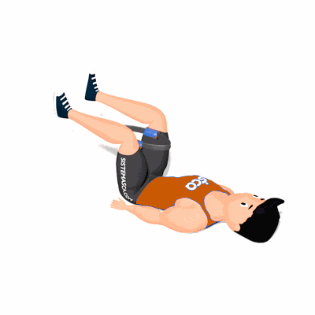

Adutor com Arco

Exercício para fortalecimento e hipertrofia dos músculos da coxa, com enfoque no musculo Adutor longo.
Ficha Técnica
Tipo: Funcional
Grupo Muscular: Perna
Aparelho: Nenhum
Músculos: Nenhum
Como realizar
- Deitado de costas para o solo, eleve as duas pernas verticalmente e flexione os joelhos a 90°;
- Coloque o arco entre as pernas, acima dos joelhos;
- Mantenha os braços na linha do corpo, embaixo dos glúteos, com as palmas das mãos voltadas para baixo. Isso evitará o arqueamento da coluna;
- Pressione lateralmente o arco com as pernas o máximo que conseguir e retorne em seguida até a posição inicial.
 RC STORE
RC STORE